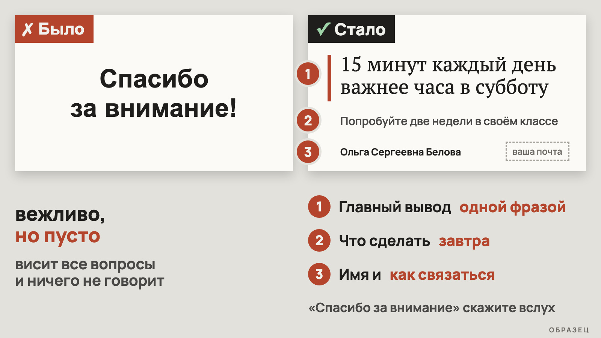
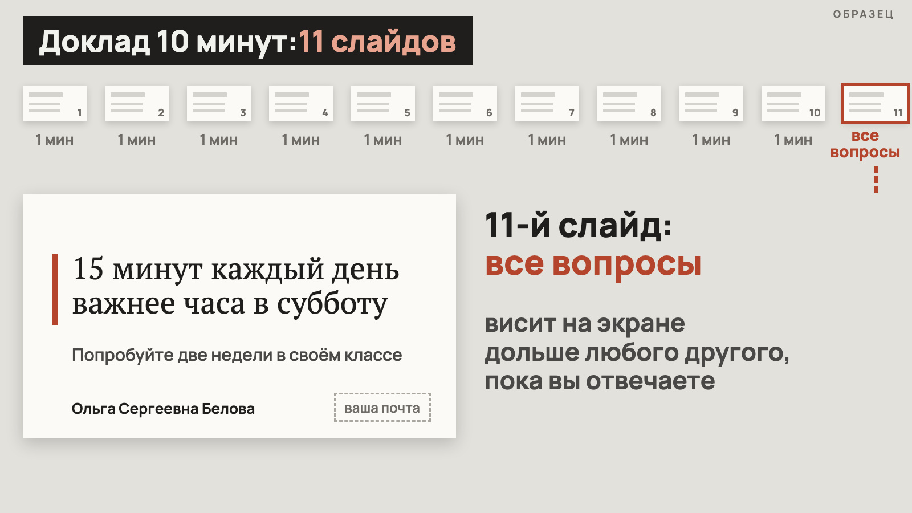
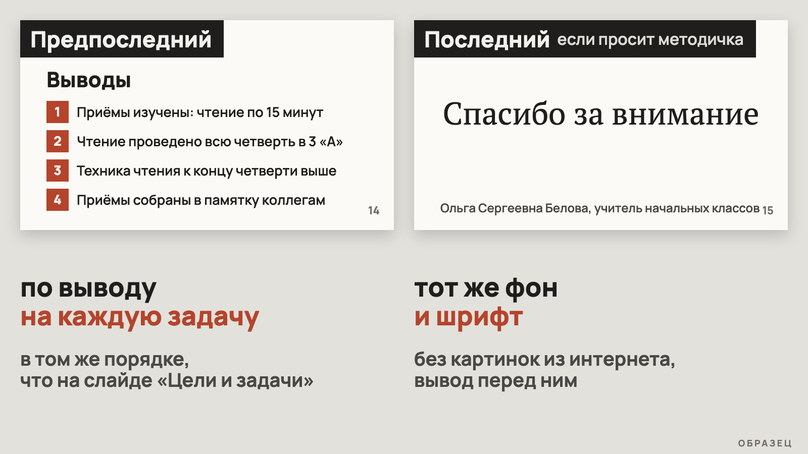
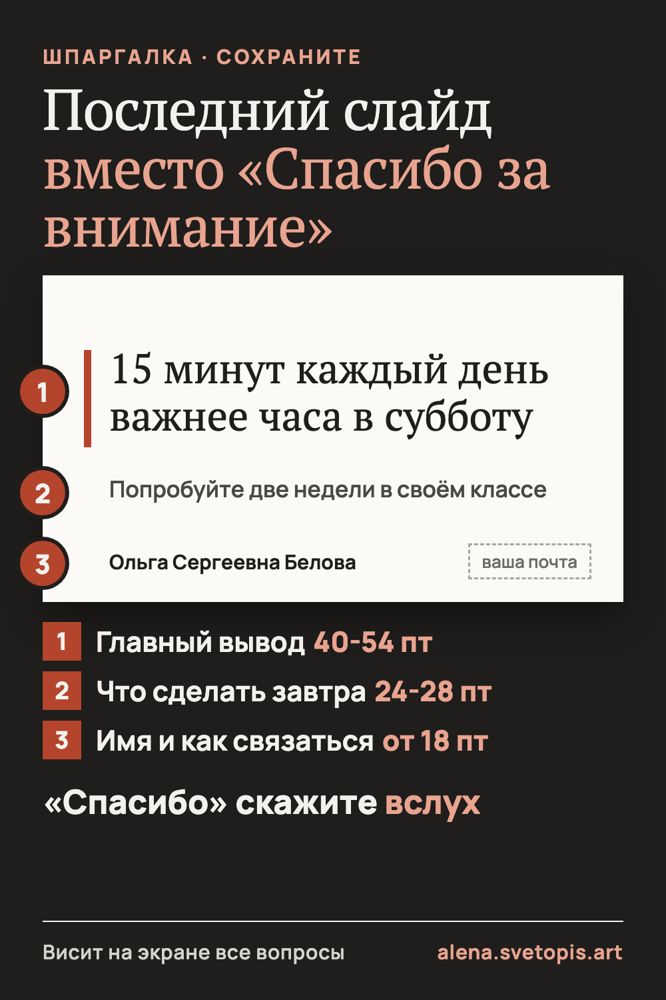

Разбор · последний слайд
Последний слайд презентации: что написать вместо «Спасибо за внимание»
Что написать на последнем слайде презентации, чтобы он работал всё время вопросов, и когда «Спасибо за внимание» всё же нужно.
Ответ за 10 секунд
| Строка на слайде | Что писать | Размер |
|---|---|---|
| Главный вывод | одной фразой, с глаголом | 40-54пт |
| Что сделать завтра | одно действие для слушателя | 24-28пт |
| Имя и связь | полностью, почта или телефон | от 18пт |
«Спасибо за внимание» скажите вслух. Методичка требует такой слайд? Сначала она, а вывод предпоследним.
Сохранить шпаргалку
Алёна Прасолова, фотограф, собираю презентации к выступлениям
28 ноября 2026
Я собираю презентации педагогам и психологам, и последний слайд в них читают дольше всех: он висит все вопросы. Ниже три строки, которые я ставлю вместо благодарности.
Что написать на последнем слайде презентации вместо «Спасибо за внимание»
Главный вывод одной фразой, под ним одно действие для слушателя на завтра, внизу имя и как связаться. Благодарность скажите вслух.

Вывод берите тот же, что на тёмном слайде-паузе, и ставьте крупно, как тему на титуле: последний слайд это пара к первому. Действие такое, чтобы коллега попробовал его завтра без денег и разрешений. Слайд «Вопросы?» не нужен: место лучше отдать выводу.
Сделайте так:
- Выпишите главную мысль доклада одной фразой с глаголом. Это крупная строка.
- Под ней одно действие: что слушатель может сделать завтра.
- Внизу имя полностью и один способ связи. Зал сфотографирует слайд, этого хватит.
Сколько последний слайд висит на экране и что сказать в конце
Все вопросы зал смотрит на последний слайд. Не листайте дальше: за ним чёрный экран. Последняя фраза вслух: тот же вывод, потом «Спасибо».

Каждый слайд живёт примерно минуту, а последний остаётся на все вопросы: строку с него читают дольше любой другой. Закончите словами вывода, поблагодарите вслух и остановитесь: если нажать дальше, PowerPoint обычно покажет чёрный экран с надписью о конце показа, и зал останется без вывода.
Сделайте так:
- Последняя фраза вслух: вывод со слайда и «Спасибо, готова ответить на вопросы».
- Дальше не нажимайте. Просят вернуться к слайду? Наберите его номер и нажмите Enter.
Когда слайд «Спасибо за внимание» всё-таки нужен
Методичка просит «Спасибо за внимание» или слайд «Выводы»? Сделайте, как просят, а главный вывод поставьте предпоследним.

На защите проекта и диплома порядок слайдов задаёт методичка, и слайд «Выводы» там почти всегда есть: по одному выводу на каждую задачу, в том же порядке, что на слайде «Цели и задачи». Просят ещё и «Спасибо за внимание»? Оформите его как остальные слайды, без картинок из интернета. На педсовете и конференции такого правила обычно нет, и последний слайд ваш.
Сделайте так:
- Найдите в методичке, чем должна заканчиваться презентация, и повторите этот порядок.
- На слайде «Выводы» ответьте на каждую задачу одной строкой, главную мысль первой.
- Благодарность: тот же фон и шрифт, что на остальных слайдах.
Шпаргалка: последний слайд на одной картинке
Три строки с размерами картинкой и готовый скелет доклада, где финал, слайды 14 и 15, уже размечен. Бесплатно и без почты.



Картинка 1000×1500, 297 КБ. Нажмите на неё, чтобы увеличить.
PDF, 1,6 МБ, откроется на телефоне. Файл PowerPoint того же скелета: в разборе «Структура презентации».
PDF открывается в этой же вкладке, вернуться к статье: кнопка «Назад». Если файл скачался, он в загрузках. Ничего не произошло? Откройте эту страницу в обычном браузере: меню с тремя точками, пункт «Открыть в браузере».
Сделаю к вашему выступлению
От 1 500 ₽, черновик до оплаты, за 1-2 дня, редактируемый файл PowerPoint.
В MAX и в Telegram отвечает бот-приёмщик. Слайды собираю и проверяю я сама.